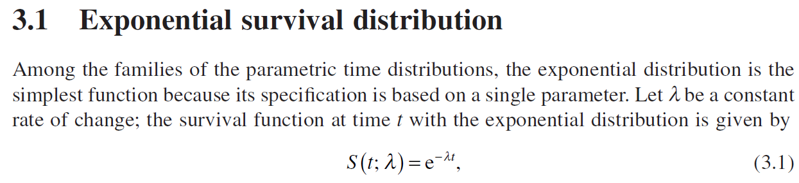
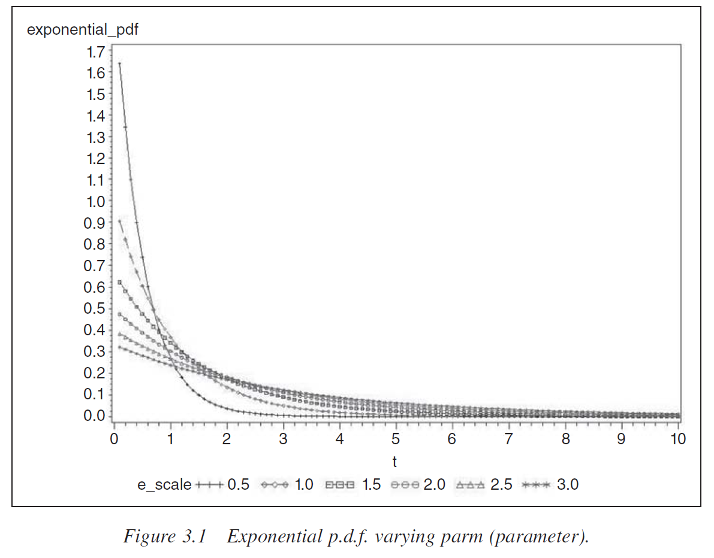
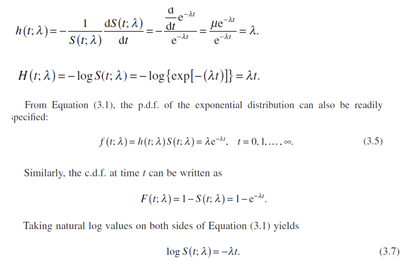
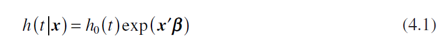
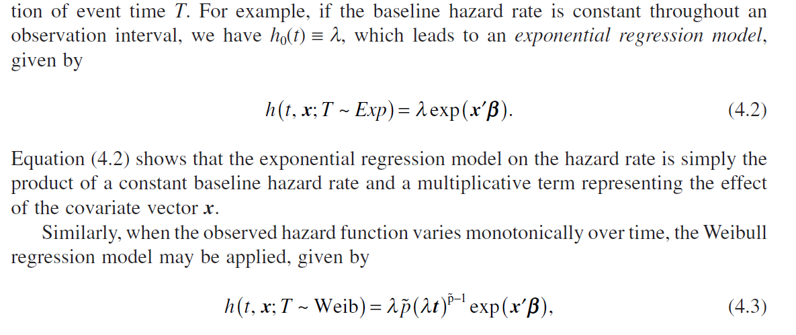
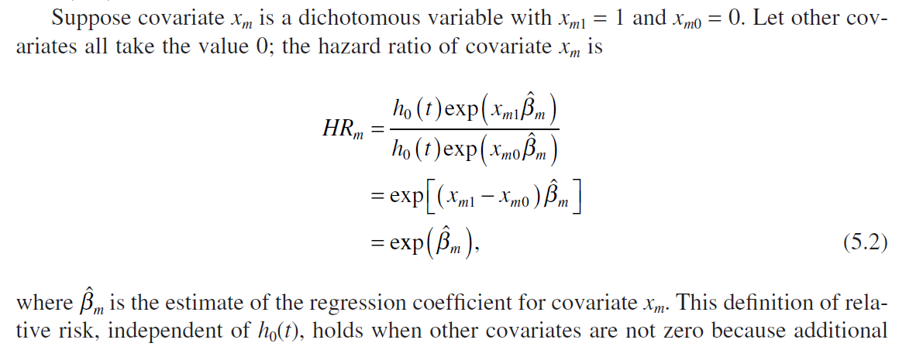

Common used function and commands in R
Survival Analysis
- let $f(t)$ be the probability density function (p.d.f) of event time T. Then $F(t)$ represents $S(t) = Pr(T>t) = 1-Pr(T \leq t) = 1 -\int_o^tf(u)du$
- The
hazard rateis referred to as the force of mortality, the intensity rate, or the instantaneous risk. By Equation (1.6) , the hazard rate is mathematically defined as the derivative of the log survival probability at time t multiplied by − 1. As a survival function is monotonically decreasing, the hazard function is nonnegative but not necessarily smaller than or equal to one. Therefore, as the standardized p.d.f., the hazard rate is a conditional probability rate. It is essential for the reader to comprehend the concept and the underlying properties of the hazard function because most survival models described in later chapters are created on the hazard rate.
There are three main types of censoring:
right, left, and interval. Censoring could occur, for example, when administering a survey to mothers every other month asking if they are still breast feeding. Right censoring occurs when mothers are still breast feeding after the last survey, since we do not know exactly how long they will continue. Left censoring occurs when mothers enter the study after they have stopped breast feeding. We do not know exactly when they stopped breast feeding, although we know that it happened before their entry to the study. Interval censoring occurs if the breast feeding ended between two successive surveys since one can only say that breast feeding ended somewhere within the past two months.- Right censoring
- Type I censoring T > C, whre T is the event time and C is a fixed censored time. All the censored survival time is greater than
- Random censoring, delayed entry is random, so it is not sure if T > C or not

- Type II censoring: a fixed number of events is targeted for a particular study. When the designed number of events is observed, a study would terminate automatically and all individuals whose survival times are beyond the time of termination are right censored
- Interval censoring: For example, a clinical trial on the effectiveness of a new medicine on posttraumatic stress disorder ( PTSD ) recruits a sample of patients diagnosed with PTSD, proposing a series of periodic follow - up investigations to examine the rate of resolution of this psychiatric disorder. Some patients with PTSD at a starting time point are observed to have recovered at the next follow - up time point. Here, the exact timing of PTSD resolution is unknown and the only information known to the researcher is the time interval in which the event occurred. As a result, the PTSD time span for those patients who have recovered is interval censored. For analytic convenience, interval - censored survival times are often assumed to be located at a fi xed time point, either in the middle of a specific interval
- Left censoring: Another example is a study of fi rst marijuana use among high school students. If a respondent has used marijuana before the study, but does not remember the exact timing of the first use, this observation is left censored. In clinical trials, researchers often specify a recruitment period and a study period. If a patient is recruited into the study but has experienced an event sof interest before the study period starts, the case is left censored.
- Left truncation
- Right censoring
Simple approaches researchers might choose to deal with censored data are to set the censored observations to missing or replace the unobserved value of the variable by zero, the minimum, maximum, mean value, or a randomly assigned value from the range of possible values. When the censoring is minimal, using one of these approaches can be reasonable. When it is not, these simple solutions can, however, cause serious bias in estimates and standard errors obtained in subsequent statistical analysis, can discard potent
- The logistic regression, for example, can be applied to estimate the probability of experiencing a particular lifetime event within a limited time period; nevertheless, it does not consider the time when the event occurs and therefore disregards the length of the survival process. Suppose that two population groups have the same rate of experiencing a particular event by the end of an observation period but members in one group are expected to experience the event significantly later than do those in the other. The former population group has an advantaged survival pattern because its average life is extended. Obviously,the logistic regression ignores this timing factor, therefore not providing precise information.
Kaplan-Meier survival estimates
-   
- proportional hazard rate model  all individuals are assumed to follow an univariate hazard function; any two individuals have hazard rates that are constant multiples of one another 
Cox proportional hazard regression model
- Limition of the parametic regression With the selection effect operating throughout the life course, a parametric distribution may not necessarily reflect the true individual trajectories of survival processes; therefore, parameter estimates, derived from a regression model associated with a misspecified distribution of lifetimes, can be biased. Additionally, many researchers are more interested in the effects of covariates on the risk of an event occurrence than in the shape of a specific failure time distribution. Only exponential and Weibull functions can be formulated as a proportional hazard model.
- it is highly useful to create a regression model that yields valid estimates of covariate effects on the hazard function while avoiding the specification of an underlying distributional function 